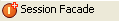

Creating a Session Facade
After you create your new project, you can create a Session Facade using the Tigerstripe Class Diagram Editor.
To create a Session Facade:
- Click Session Facade (  ), in the Class Diagram Editor Drawing pallete.
- Click in the Class Diagram Editor and the Session Facade appears. When you initially create a Session Facade, the facade is pre-populated with the default name of Session0.
- Enter a name for your facade.
Note:Tigerstripe Explorer under the src folder.
- Rest on your facade, and the Add Method option appears ( ).
- Click Add Method and a default method named void method0() appears.
- Enter a new name for your method.
- Double click the project descriptor (tigerstripe.xml) in the Tigerstripe Explorer. This opens your Tigerstripe project perspective.
- Navigate to the Generation tab and enable the desired generation plug-ins.
- Click Save to save your changes.
- Click the Generate icon on the toolbar. The Generate Tigerstripe Project dialog box displays.
- Accept the default Source Folder or click Browse to navigate to a new location and click Finish.
Related Topics
The Tigerstripe Class Diagram Editor
Using the Class Diagram Editor
The Tigerstripe Class Diagram Editor Overview
Working with Tigerstripe Artifacts
Adding Relationships
Additional Class Diagram Editor Tools
 Creating a Managed Entity
Creating a Managed Entity
© copyright 2005, 2006, 2007 Cisco Systems, Inc. - All rights reserved